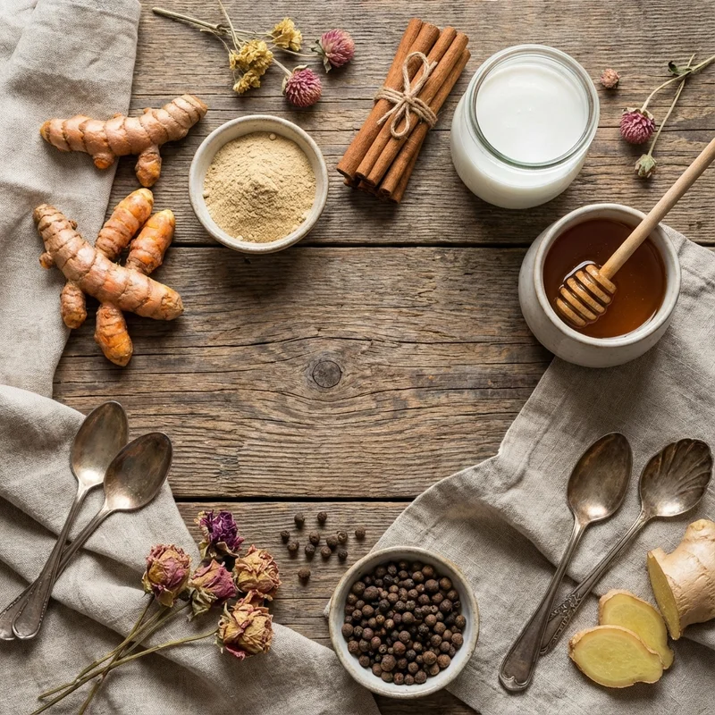
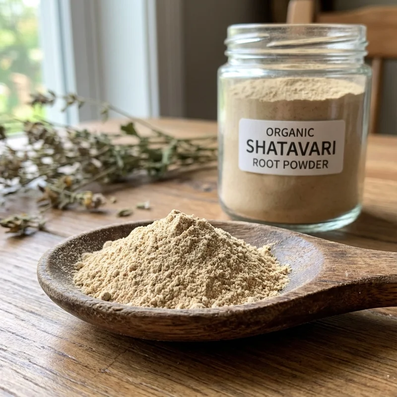

Shatavari: Equilibrio Hormonal Natural y Bienestar Femenino
El shatavari (Asparagus racemosus) es una de las plantas más veneradas de la medicina ayurvédica. Sus propiedades adaptógenas se atribuyen a su alta concentración de saponinas esteroidales conocidas como shatavarinas (I-IV), las cuales modulan el eje hipotálamo-hipófisis-adrenal (HPA), ayudando a regular los niveles de cortisol y apoyando la sensibilidad de los receptores de estrógeno en el organismo femenino.

📊 Datos Generales
⏱️ Tiempo de Preparación: 15 minutos
🔥 Cocción: 15 minutos
⏰ Total: 30 minutos
🍽️ Porciones: 4 personas (4 tazas)
📈 Calorías: 220 kcal por porción | Proteína 15g | Carbohidratos 18g | Grasas saludables 10g
🌿 Ingredientes

- 4 tazas de leche de coco, almendras o avena sin azúcar (1 litro)
- 2 cucharaditas de polvo de shatavari (8g)
- 1½ cucharaditas de cúrcuma en polvo
- ½ cucharadita de canela Ceylon en polvo
- ¼ cucharadita de jengibre fresco rallado o en polvo
- ¼ cucharadita de cardamomo en polvo
- Pizca de pimienta negra recién molida (potencia absorción de cúrcuma)
- 2 cucharadas de aceite de coco virgen
- 2-3 cucharadas de miel cruda o sirope de arce (para endulzar)
- 1 cucharadita de extracto de vainilla (opcional)
- Pizca de sal del Himalaya
👨🍳 Preparación Paso a Paso
- Preparar las especias: En un tazón pequeño, mezcla el polvo de shatavari, cúrcuma, canela, jengibre, cardamomo y pimienta negra. Esta mezcla previa asegura distribución uniforme y evita grumos en la bebida final.
- Calentar la leche: En una olla mediana, vierte las 4 tazas de leche vegetal. Calienta a fuego medio hasta que esté caliente pero NO hirviendo (aproximadamente 70-80°C). Si hierve vigorosamente, puede alterar las propiedades de las especias.
- Incorporar especias: Cuando la leche esté caliente, reduce el fuego a bajo. Añade la mezcla de especias gradualmente mientras bates con un batidor manual para evitar grumos. Bate vigorosamente durante 30 segundos.
- Añadir grasas: Incorpora las 2 cucharadas de aceite de coco virgen. La grasa es crucial para la absorción de la curcumina (compuesto activo de la cúrcuma) y los compuestos liposolubles del shatavari. Mezcla bien.
- Infusionar: Mantén a fuego bajo durante 10-12 minutos, removiendo ocasionalmente con cuchara de madera. NO hiervas. Este tiempo permite que los compuestos activos se liberen completamente en la leche.
- Endulzar y aromatizar: Retira del fuego. Añade la miel cruda (nunca mientras hierve, ya que pierde propiedades enzimáticas), extracto de vainilla y pizca de sal. La sal potencia los sabores y equilibra el dulzor.
- Espumar (opcional): Para una textura más cremosa y café-latte, transfiere la mezcla caliente a una licuadora de alta velocidad y procesa 30 segundos a velocidad alta. Alternativamente, usa un espumador de leche eléctrico.
- Servir: Cuela la leche dorada a través de un colador fino para eliminar cualquier grumo residual. Sirve caliente en tazas grandes. Espolvorea un poco de canela en polvo por encima como decoración.
- Conservar: Si sobra, guarda en el refrigerador en botella de vidrio hermética hasta 3 días. Recalienta suavemente a fuego bajo antes de servir (no microondas).
💪 Información Nutricional Destacada
El shatavari golden milk ofrece beneficios ayurvédicos respaldados por investigación moderna:
- Shatavari adaptógeno: Llamado "quien posee 100 esposos" en sánscrito, el shatavari contiene saponinas esteroidales (shatavarinas) que equilibran hormonas femeninas, regulan ciclos menstruales y alivian síntomas de SPM y menopausia [2]
- Apoyo a la fertilidad: Tradicionalmente usado para mejorar la salud reproductiva femenina, aumenta la producción de óvulos de calidad y prepara el útero. También apoya la lactancia materna aumentando la producción de leche [1]
- Propiedades galactagogas: Estimula la secreción de prolactina, aumentando producción de leche materna hasta un 30% en madres lactantes según estudios clínicos
- Digestivo y prebiótico: Los fructooligosacáridos del shatavari alimentan bacterias beneficiosas intestinales, mejoran la absorción de nutrientes y calman mucosa gástrica irritada
- Cúrcuma antiinflamatoria: La curcumina reduce inflamación sistémica, mejora marcadores de artritis, protege articulaciones y tiene efectos neuroprotectores potentes
- Adaptógeno para estrés: El shatavari modula el eje HPA (hipotálamo-pituitaria- adrenal), reduce cortisol elevado y mejora la respuesta del cuerpo al estrés crónico
- Antioxidantes potentes: Rico en racemofuran, asparagamina y quercetina que combaten radicales libres, protegen células del envejecimiento y reducen estrés oxidativo
- Inmunidad mejorada: Los polisacáridos inmunomoduladores del shatavari estimulan producción de linfocitos T y macrófagos, fortaleciendo defensas naturales
- Salud urinaria: Propiedades diuréticas suaves que apoyan función renal óptima y previenen infecciones del tracto urinario recurrentes
✨ Tips y Variaciones

- Momento ideal de consumo: Bebe 1 taza por la NOCHE antes de dormir para máxima absorción hormonal y efecto calmante. También puedes tomar por la mañana como desayuno nutritivo
- Versión proteica: Añade 1 cucharada de proteína vegetal en polvo (guisante, cáñamo) para un desayuno completo con 25g de proteína por porción
- Boost de colágeno: Incorpora 1 cucharada de péptidos de colágeno hidrolizado para apoyar salud de piel, cabello y articulaciones (especialmente útil en menopausia)
- Versión helada: Prepara la receta, deja enfriar completamente y sirve sobre hielo para un "shatavari iced latte" refrescante perfecto para verano
- Sin azúcar: Omite la miel y usa stevia líquida o eritritol para una versión cetogénica con solo 120 kcal por porción
- Extra cremoso: Sustituye ½ taza de leche por nata de coco para textura más rica y decadente similar a un cappuccino
- Variante ashwagandha: Para hombres o enfoque más energizante, sustituye el shatavari por ashwagandha (dosis: 1-2 cucharaditas) que mejora testosterona y energía
- Combo sinérgico femenino: Añade ¼cucharadita de polvo de raíz de maca para potenciar equilibrio hormonal y libido femenina naturalmente
- Pasta dorada (golden paste): Prepara una pasta concentrada mezclando todos los polvos con ½ taza de agua caliente. Guarda en frasco refrigerado y añade 1-2 cucharaditas a leche caliente cuando necesites
- Dosificación recomendada: 1-2 tazas diarias. Los adaptógenos como shatavari muestran mejores resultados con uso consistente durante 4-12 semanas
- Precauciones: Consulta médico si tienes cálculos renales, estrógeno-dependiente (cáncer mama), embarazo o lactancia. Puede interactuar con diuréticos
- Compra de calidad: Busca shatavari orgánico certificado, preferiblemente de origen indio. El polvo debe tener color beige claro y aroma dulce terroso
Este shatavari golden milk es una herramienta poderosa de la medicina ayurvédica para el bienestar hormonal femenino. Combínalo con prácticas de autocuidado, alimentación consciente y ejercicio suave como yoga para resultados óptimos en equilibrio hormonal, digestión y vitalidad general.
Referencias Científicas
- Supriya Mahajan 1, Prathamesh Avad 2, Jayshree Langade (2025). "Shatavari (Asparagus racemosus): A Promising Ally for Fertility". Front Aging Neurosci. PubMed PMID: 40974515
- Supriya Mahajan 1, Prathamesh Avad 2, Jayshree Langade 3. (2025). "Efficacy and Safety of Shatavari (Asparagus racemosus) Root Extract for Perimenopause: Randomized, Double-Blind, Placebo-Controlled Study". Nutr Neurosci. PubMed PMID: 41209045
💚 Encuentra Shatavari Orgánico en Amazon
Descubre polvo de shatavari certificado orgánico, cúrcuma de calidad, leche de coco y especias ayurvédicas para preparar tu golden milk medicinal.
Ver Productos en Amazon →